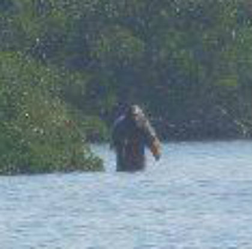

|  |
b.1988, Santiago, Chile. mbmartinbruce@gmail.com EDUCATION 2007 - 2010 Bachelor of Fine Art with major in Painting, Finis Terrae University, Santiago, Chile SOLO EXHIBITIONS 2019 ‘Curva centauro’, The Intuitive Machine, Santiago, Chile 2018 ‘Fray Bentos’, Maggie ́s Art Space, Melbourne, Australia 2016 ‘Patio Parejas’, Club Social de Artistas, Santiago, Chile 2016 ‘Pc Titanic’, La sede, Buenos Aires, Argentina 2015 ‘En los campos suyos’, Estudio Privado Arte, Santiago, Chile 2014 ‘Martin Bruce in Tactile Gallery’, Santiago, Chile 2013 ‘Huelen a vapor de agua’, A cuadrado Gallery, Santiago, Chile 2012 ‘Vruec Series’, House of Bricks, Melbourne, Australia PUBLICATIONS ´Ladrón de melodías’ Volume 1, Abasto Screenprinting studio, Oct 2018, Stgo, Chile ´Vruec series’ Spont #12, RAT, Oct 2018, Stgo, Chile COLLECTIONS The ‘F.D.A.C.M.A’ Art Foundation, Buenos Aires, Argentina TEACHING 2019 Art Tutor, Nube foundation, Santago, Chile 2015 - 2016 Art Tutor, Mustakis Foundation, Santiago, Chile |